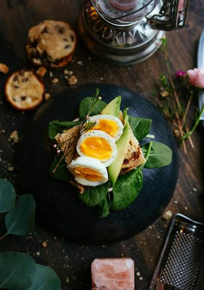
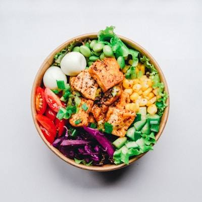
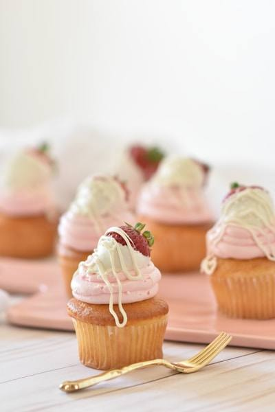

Найкращі приклади подачі страв

Правильний сніданок — основа продуктивного дня. Від класичної яєчні до смузі-боулів — варіанти безмежні.

Ситні та збалансовані рецепти для обіду та вечері. Класичні рецепти з сучасною подачею.

Мистецтво завершення трапези. Від тірамісу до макаронс — кожен десерт це окремий шедевр.